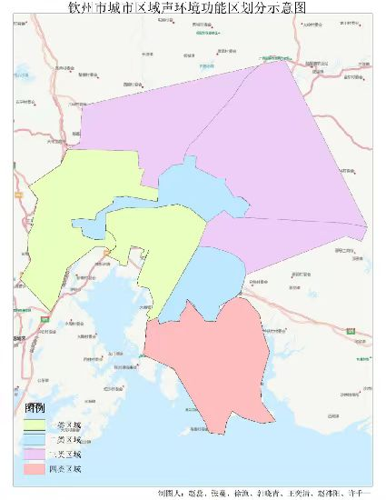

!DOCTYPE html>
<html lang="en">
<head>
    <meta charset="UTF-8">
    <meta name="viewport" content="width=device-width, initial-scale=1.0">
    <title>Document</title>
</head>
<body background="imag/background.png">
<style>
    .img_container {
        width: 100%; /* 或者设置一个固定的宽度，如：width: 600px; */
        text-align: center; /* 可选，如果希望图片在移动端也保持水平居中 */
    }

    .img {
        width: 1000px;
        height: 1000px;
        display: block; /* 将图片设置为块级元素，确保 `margin: auto` 生效 */
        margin: auto;
    }
</style>
<div class="img_container">
    
</div>
</body>
</html>